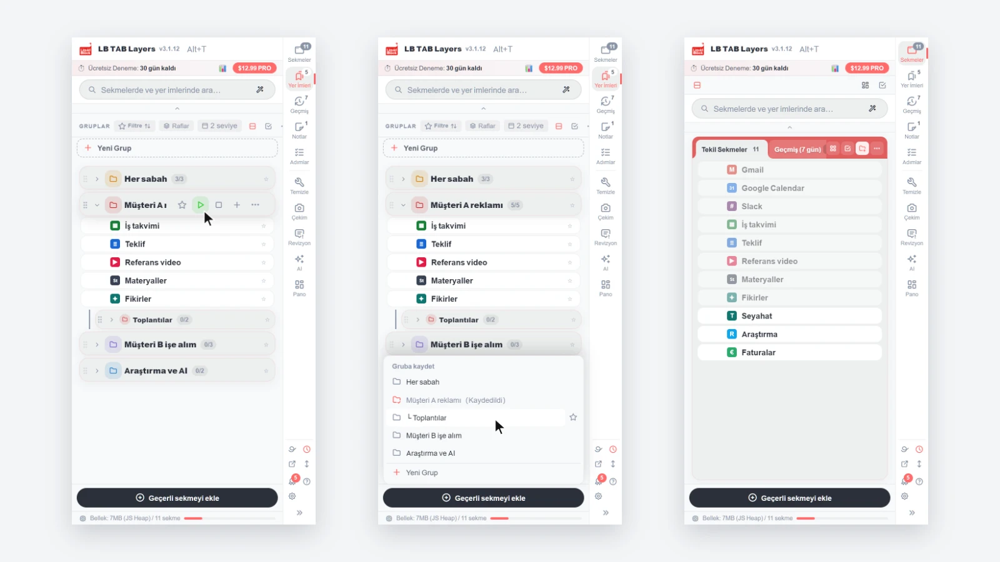
LB TAB Layers’ı açmak için Alt+T tuşlarına basın (Mac’te Option+T). Başlangıçta bilmeniz gereken yalnızca üç şey var: bulunduğunuz sekmeyi Geçerli sekmeyi ekle düğmesiyle kaydedin, bir grubun tamamını ▶ ile açın ve ■ ile yeniden kapatın. Kaydettiğiniz her şey Chrome yer işareti olarak saklanır; sekmeleri kapatsanız da Chrome’u yeniden başlatsanız da yerinde durur.
LB TAB Layers’ı kurduğunuz için teşekkürler. Bu sayfada yalnızca ilk beş dakikada işinize yarayacak bilgiler var.
Fikir basit. Sekmeler “şimdi”dir: şu anda üzerinde çalıştıklarınız. Yer işaretleri “sonra”dır: geri döneceğiniz sayfalar. Bugünün geçmişi ise “kayıt”tır: bugün baktığınız sayfaların dökümü. LB TAB Layers’ta bu üçü arasında tek bir yan panelden geçiş yaparsınız.
💡 İstediğiniz zaman açmak için Alt+T tuşlarına basın (Mac’te Option+T). Araç çubuğundaki LB TAB Layers simgesine de tıklayabilirsiniz. Simgeyi göremiyorsanız yapboz parçası simgesine tıklayın ve LB TAB Layers’ı sabitleyin.
Önce: mevcut yer işaretlerinizi kopyalayarak başlayın (önerilir)
Chrome’da zaten yer işaretleriniz varsa başlamanın en hızlı yolu önce onları TAB Layers’a kopyalamaktır. Orijinal yer işaretleriniz taşınmaz, bu yüzden hiçbir şey kaybolmaz.
“Yer işaretlerinizden başlayın (önerilen)” seçeneğine tıklayın
Kurulumdan hemen sonra açılan karşılama ekranının en üstünde yer alır.
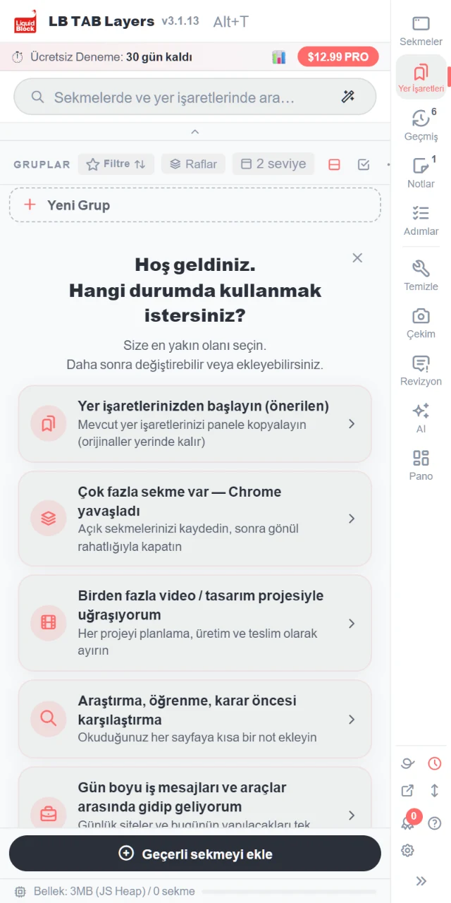
Kopyalamak için “OK” düğmesine tıklayın
Kaç yer işaretinin kopyalanacağı gösterilir. Orijinal yer işaretleriniz olduğu yerde kalır. Çok sayıda yer işaretiniz olsa bile yalnızca birkaç saniye sürer.
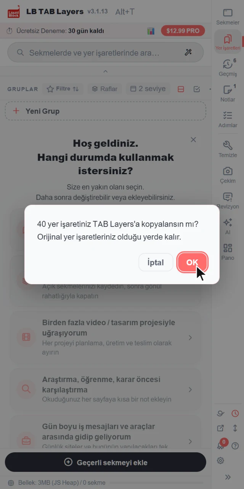
Sık kullandığınız bir sayfayı “İlk projem” grubuna taşıyın
Kopyalar “Mevcut yer işaretleri (tarih kopyası)” adlı bir bekleme alanında toplanır ve her klasör bir alt gruba dönüşür. Sık kullandığınız bir sayfanın satırının sağ ucundaki “→ İlk projem” düğmesine tıkladığınızda o sayfa oraya taşınır. Bekleme alanı, ücretsiz sürümdeki 5 grup sınırına dahil edilmez.
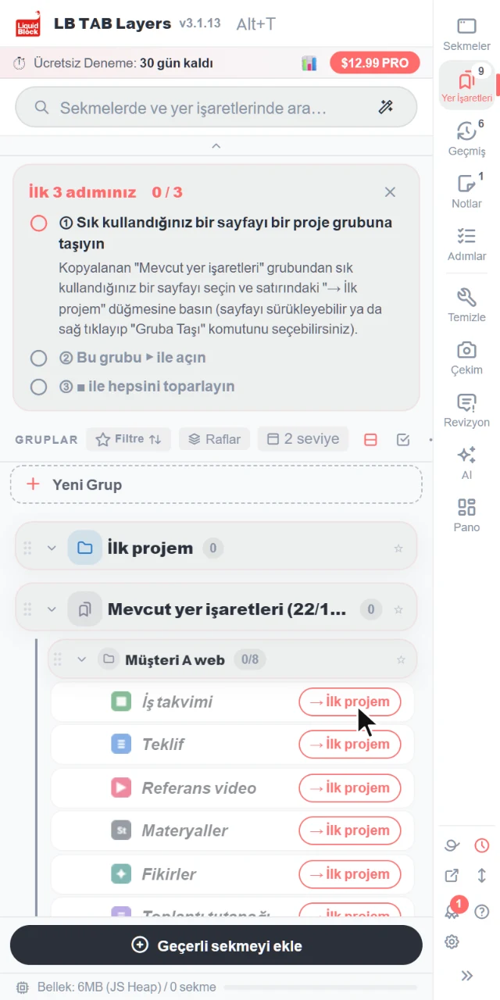
Sonra ▶ ile açın, ■ ile kapatın
Üstteki “İlk 3 adımınız” kartı, sıradaki adımı tek tek gösterir. 200 veya daha fazla yer işaretiniz varsa, bunları büyük ekranda (panoda) düzenlemenizi de önerir.
💡 Klasörleri seçip olduğu gibi grup olarak da taşıyabilirsiniz. Bunu Ayarlar → Veri → Yer işaretleri yolundan ya da tam ekran panonun üst kısmındaki “Yer işaretlerini içe aktar” düğmesinden açabilirsiniz. Diğer tarayıcılardan veya uzantılardan dışa aktarılan dosyaları (HTML, CSV, TXT) da oradan ekleyebilirsiniz. TAB Layers’a alıştığınızda, orijinal yer işaretlerinizi tek bir klasörde toplamayı da önerir (hiçbir şey silinmez ve istediğiniz zaman geri alabilirsiniz).
Yan panel engel oluyorsa: sayfanın üzerinde “Kaplama”
Yan panel sayfanın yanında durduğu için küçük bir ekranda sayfayı daraltır. Böyle durumlarda paneli sayfanın üzerinde gösteren “Kaplama” moduna geçebilirsiniz. Çoğu zaman sayfanın kenarında yalnızca küçük bir “+” durur; panel yalnızca ihtiyaç duyduğunuzda açılır.
“Ayarlar” › “Davranış” › “Görünüm modu” bölümünde “Kaplama” seçeneğini seçin
Ayarlar’ı, sağdaki sütunun en altındaki dişli simgesinden açın. “Kaplama Konumu” (sol veya sağ), “Kaplama Genişliği”, “Düğme Konumu” ve “Başlangıç Görünümü” (örneğin “Göz at”) ayarlarını da buradan seçebilirsiniz.
Yan paneli kapatın
Alt+T tuşlarına basın veya panelin sağ üstündeki × düğmesine tıklayın. Zaten açık olan bir sayfada “+” görünmüyorsa sayfayı yeniden yükleyin.
Fareyi sayfanın kenarındaki “+” işaretinin üzerine getirin
Panel, sayfanın üzerine kayarak açılır. Fareyi sayfaya geri götürdüğünüzde kapanır.
Kaplamada temel özellikler kullanılabilir. Sekmelerinizi ve yer işaretlerinizi yönetebilir (kaydetme, ▶ ile açma, ■ ile kapatma, arama), “Notlar” ve “Adımlar” görünümlerini kullanabilirsiniz. Videolar ve sayfalar için revizyon notları (“Revizyon”) yan panelde kullanılır; gerektiğinde yan paneli Alt+T ile açın. Kaplama bir PRO özelliğidir (30 günlük ücretsiz deneme süresinde kullanılabilir).
💡 Paneli yan panelin dışında da açabilirsiniz. Sağdaki sütunun altındaki “Görüntüleme Yöntemi” menüsünden paneli yeni bir sekmede veya ayrı bir pencerede açabilirsiniz. Dizüstü bilgisayarda tek bir sekme size geniş bir alan sağlar; iki monitörünüz varsa ayrı pencereyi diğer ekranda tutabilirsiniz.
1. Ekranı tanıyın
Panelin kenarında yukarıdan aşağıya bir düğme sütunu bulunur: Sekmeler, Yer İşaretleri, Geçmiş, Notlar ve Adımlar. Birine tıkladığınızda o görünüme geçersiniz. Küçük sayılar, örneğin kaç sekmenin açık olduğunu veya kaç grubunuz olduğunu gösterir.
- Sekmeler — şu anda açık olan ve henüz hiçbir yere kaydetmediğiniz sekmeler
- Yer İşaretleri — kaydettiğiniz sekmeler; her projeye bir grup olacak şekilde gruplanır
- Geçmiş — kaydetmedikleriniz de dahil, bugün ziyaret ettiğiniz sayfalar
- Notlar ve Adımlar — işinizle ilgili notlar ve adım adım ilerlediğiniz kontrol listeleri
Ayırıcı çizginin altında araçlar bulunur. İlk gün onlara ihtiyacınız yok.
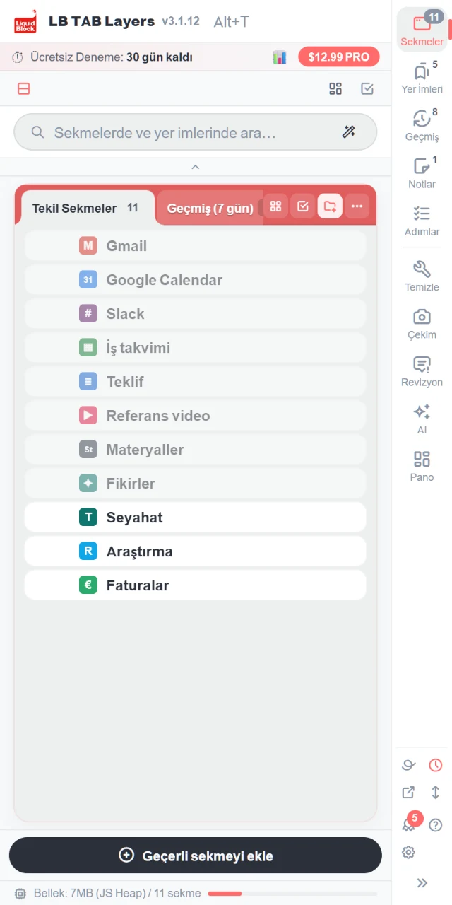
2. Temel işlemler
Grup oluşturun
Yer İşaretleri görünümünde, listenin üstündeki + Yeni Grup düğmesine tıklayın. Gruba “Müşteri C web” veya “Her sabah” gibi bir işin adını verin. En iyi sonucu her proje için bir grup verir.
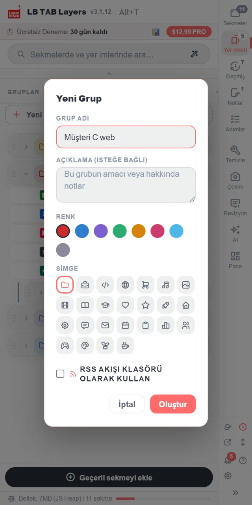
Bulunduğunuz sekmeyi kaydedin
Panelin altındaki Geçerli sekmeyi ekle düğmesine tıklayın ve bir grup seçin. Sayfanın zaten kayıtlı olduğu gruplarda Kaydedildi işareti görünür.
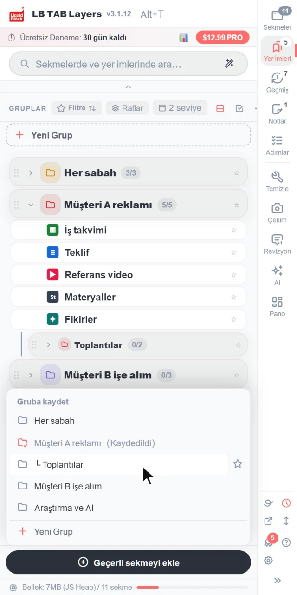
Açık birkaç sekmeyi bir kerede kaydedin
Sekmeler görünümünde, seçime başlamak için bir sekmenin solundaki daireye tıklayın. Kaydetmek istediğiniz diğer sekmelerin dairelerine de tıklayın, ardından alttaki Gruba ekle düğmesine tıklayıp bir grup seçin. Sekmeleri tek tek bir grubun üzerine sürükleyerek de ekleyebilirsiniz.
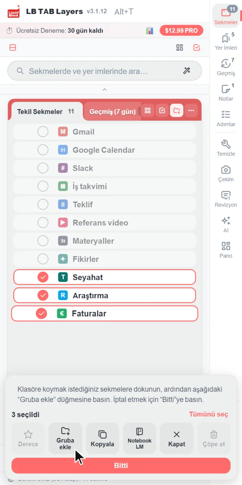
▶ ile hepsini açın, ■ ile hepsini kapatın
Fare imlecini bir grubun üzerine getirin ve tüm sekmelerini açmak için ▶ düğmesine tıklayın. Sekmeler, grubunuzla aynı ada ve renge sahip bir Chrome sekme grubu olarak birlikte açılır. İşiniz bittiğinde ■ düğmesine tıklayarak bu sekme grubunu tek seferde kapatın. Kaydettiğiniz sekmeler kayıtlı kalır.
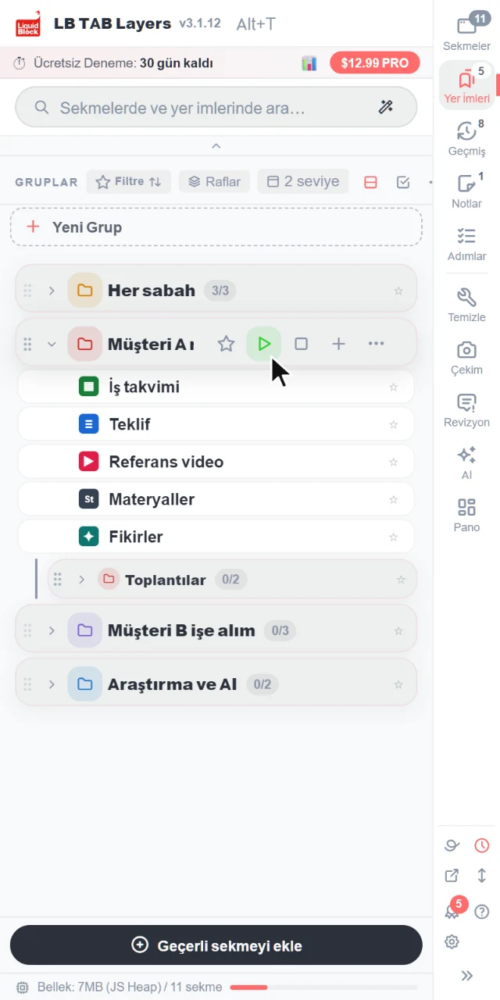
Arayın
Üstteki arama kutusuna yazarak açık sekmelerinizde, kayıtlı sekmelerinizde ve bugünün geçmişinde aynı anda arama yapın. Küçük yazım hataları sorun olmaz.
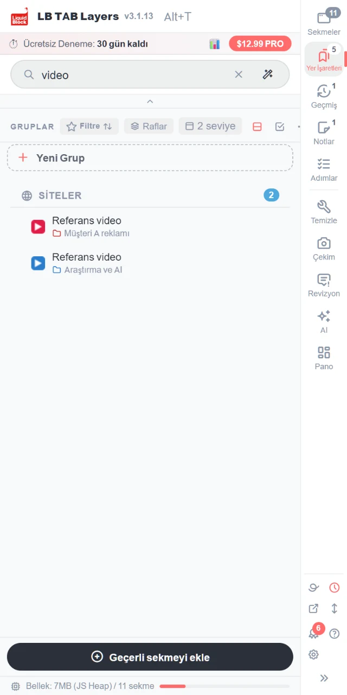
3. İşinizi düzenlemenin basit bir yolu
Her proje için bir grup
Bir grubu, tek bir işe ayrılmış bir çalışma masası gibi düşünün. Bütün gününüzü bu düzenle yürütebilirsiniz:
- Sabah — bugünkü projenin ▶ düğmesine tıklayın ve kaldığınız yerden devam edin
- İş değiştirirken — üzerinde çalıştığınız projeyi ■ ile kapatın, sıradakini ▶ ile açın
- Gün sonunda — yalnızca ■ düğmesine tıklayın. Yarın ▶ hepsini geri getirir
Her gün kullandığınız siteleri sabitleme çubuğuna koyun
E-posta veya takvim gibi her gün açtığınız siteler için bir sekmeye ya da yer işaretine sağ tıklayın ve Sabitleme çubuğuna ekle seçeneğini seçin. Bu siteler panelin üstünde küçük simgeler olarak durur ve tek tıklamayla açılır (en fazla 12 tane). Sürükleyerek de ekleyebilirsiniz.
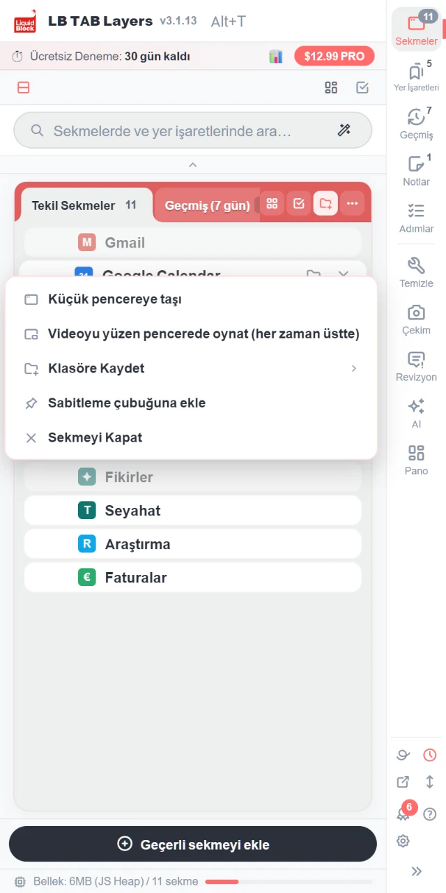
Her projeye ayrı bir pencere
Bir gruba sağ tıklayın ve Yeni pencerede aç seçeneğini seçin; grup, ayrı bir pencerede sekme grubu olarak açılır. İki iş üzerinde yan yana çalışırken veya ikinci bir monitör kullanırken işe yarar.
Bir şeyi kaydetmeyi mi unuttunuz? Bugünün geçmişinde duruyor
Her şeyi kaydetmek zorunda değilsiniz. Kaydetmediğiniz sayfalar, bugün ziyaret ettiğiniz sırayla Geçmiş görünümünde durmaya devam eder. Önemli olanı bir gruba kaydedin, gerisini kapatın; çoğu zaman bu kadarı yeter.
🔒 Kaydettiğiniz her şey Chrome yer işareti olarak saklanır. Kayıtlı sekmeleriniz, onları kapatsanız da Chrome’u yeniden başlatsanız da yerinde kalır; LB TAB Layers yer işaretlerinizi hiçbir yere göndermez. Notlar gibi uzantının içinde tutulan verileri Ayarlar’dan dışa aktarabilirsiniz.
On işlem daha görmek için kılavuza (İngilizce) göz atın.
Sık sorulan sorular
Q. LB TAB Layers’ı nasıl açarım?
Klavyede Alt+T tuşlarına basın (Mac’te Option+T). Araç çubuğundaki LB TAB Layers simgesine de tıklayabilirsiniz.
Q. Uzantıyı kaldırırsam kayıtlı sekmelerim kaybolur mu?
Hayır. Kayıtlı sekmeler Chrome yer işaretlerinizde, gruplarınızla aynı adı taşıyan klasörlerde kalır. Notlar gibi uzantının içinde tutulan veriler ise silinir; bu yüzden önce Ayarlar’dan dışa aktarın.
Q. Arama kutusu nerelerde arar?
Açık sekmelerinizde, gruplarınıza kaydettiğiniz sekmelerde ve bugünün geçmişinde; hepsinde aynı anda.
Q. Ücretsiz mi?
Evet. Ücretsiz sürümde en fazla 5 grup oluşturabilirsiniz. Bugünün geçmişi, Adımlar, pano ve AI ile arama PRO özellikleridir; kurulumdan sonraki 30 gün boyunca tüm özellikleri kullanabilirsiniz.
Tek bir projeyle başlayın.
Alt+T ile açın, bulunduğunuz sekmeyi kaydedin, ▶ ile açın, ■ ile kapatın. Hesap gerekmez · Chrome yer işareti olarak saklanır · Tüm özellikler 30 gün ücretsiz
Chrome’a ücretsiz ekle →